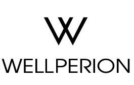
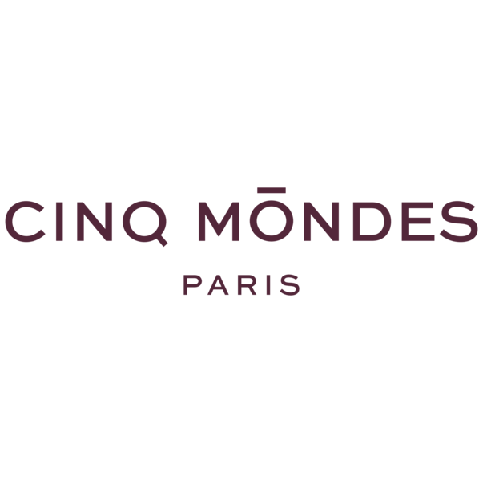
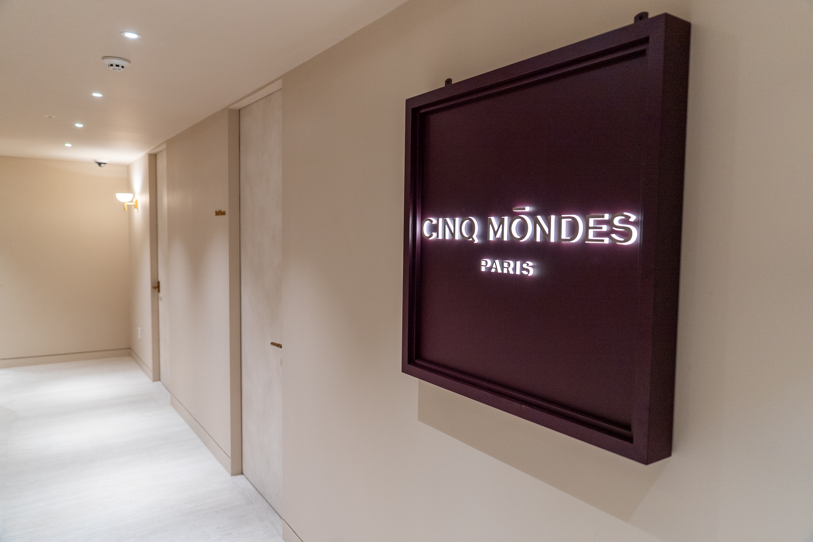
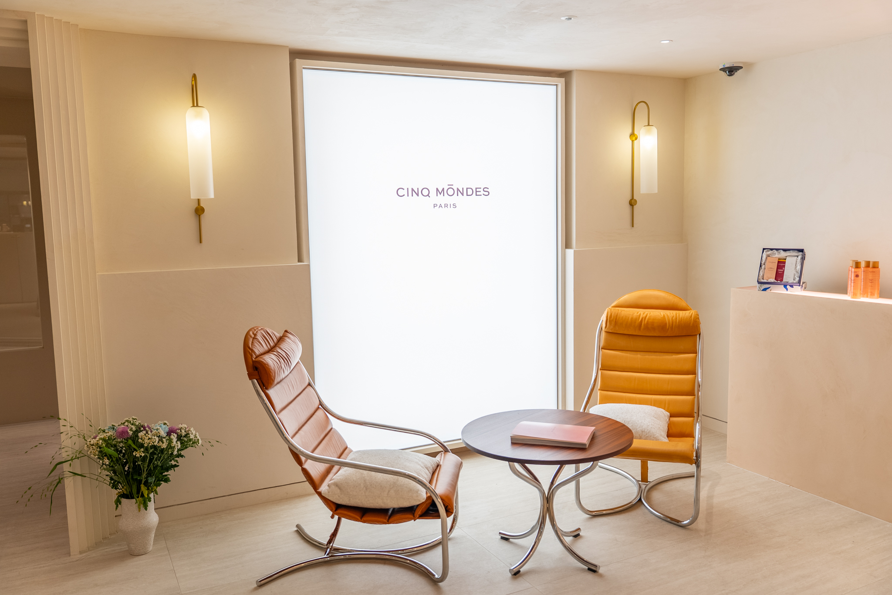
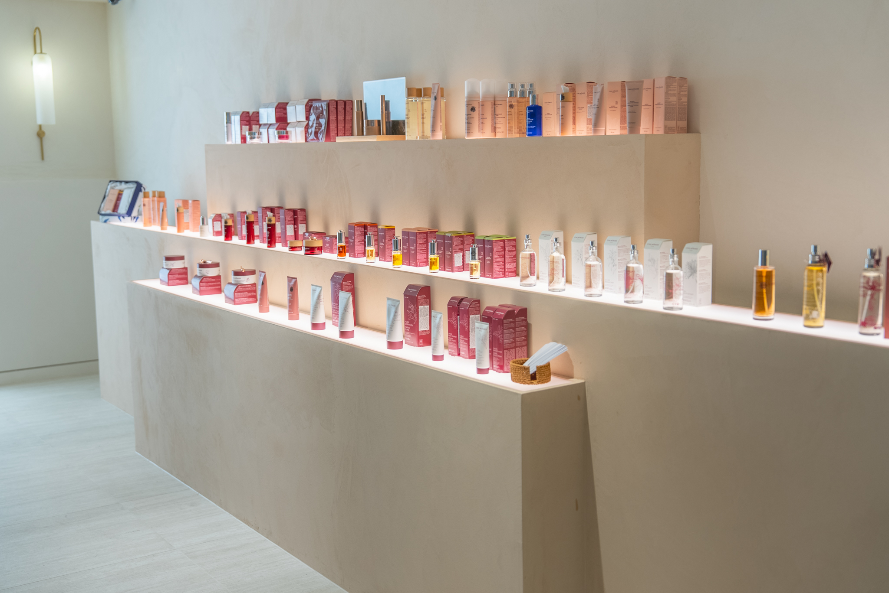
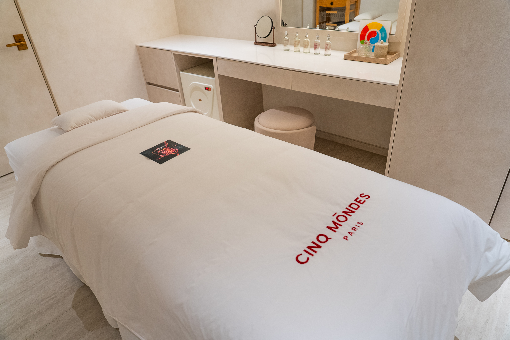
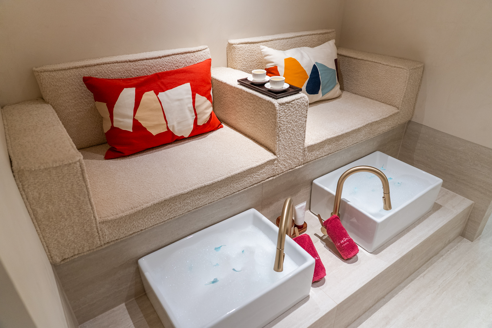
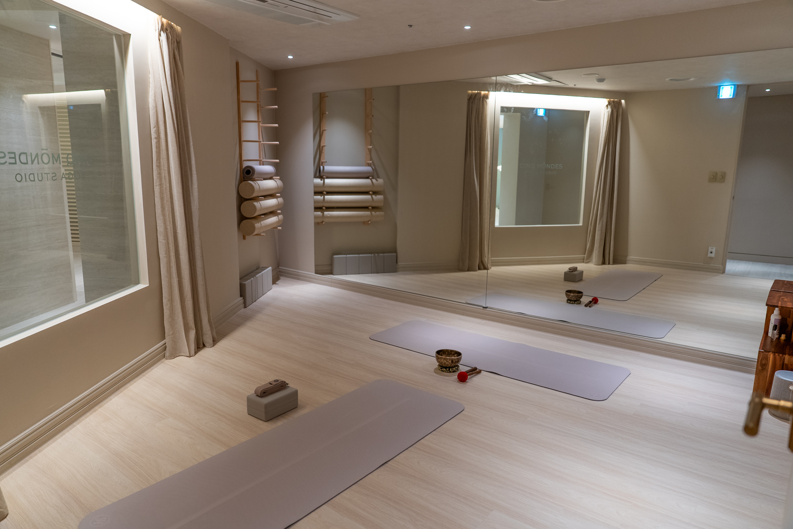

웰페리온의 미션은 지속되지 않는 건강 문제를 해결하는 것입니다. 운동은 시작보다 지속이 어렵고, 회복은 늘 뒤로 미뤄집니다. 우리는 운동과 회복을 한 공간, 한 멤버십, 한 동선 안에 담아 — 건강이 자연스럽게 이어지도록 설계합니다.
웰페리온은 한남동이라는 동네의 결을 따라 지어진 프리미엄 라이프스타일 클럽입니다. 운동 코어를 중심으로, 회복·힐링을 같은 공간에서 제공하며, 세계적인 파트너 브랜드와의 협업으로 경험의 폭을 넓혀갑니다.
전문 트레이너와 클래스 라인업으로, 회원은 자신의 리듬에 맞는 운동을 매일 이어갈 수 있습니다.
2017년 이래 웰페리온은 멤버십 운영, 회원 경험, 시설 관리의 노하우를 축적해 왔습니다. 이 검증된 운영 자산이 — 회복과 파트너십을 더해 브랜드를 확장하는 단단한 토대가 됩니다.

×
Cinq Mondes는 2001년 파리에서 창립된 럭셔리 스파 브랜드입니다. 브랜드 이름 'Cinq Mondes(다섯 세계)'는 인도 · 중국 · 일본 · 발리 · 모로코 다섯 대륙의 전통 뷰티 리추얼에서 영감을 받았습니다.
'정직하고 고농축된 식물성'이라는 철학 아래, 각 지역의 전통 의식을 현대적인 트리트먼트로 풀어냅니다. 웰페리온 회원은 이 세계적인 스파 경험을, 운동을 마친 같은 공간 안에서 만날 수 있습니다.



Cinq Mondes의 핵심은 페이셜 · 바디 · 시그니처 마사지입니다. 인도의 아유르베다, 일본의 코비도(Kobido), 그리고 브랜드 고유의 DERMAPUNCTURE 등 — 세계 각지의 전통이 깃든 회복 의식을 경험할 수 있습니다.



회원은 운동과 회복을 따로 예약하고 따로 이동할 필요가 없습니다. 한 멤버십 안에서, 운동의 강도와 회복의 깊이를 자신의 컨디션에 맞게 조율합니다.
헬스 · 수영 · 골프 · 스쿼시 · 그룹 클래스. 전문 프로그램으로 매일의 운동 루틴을 완성합니다.
Cinq Mondes 트리트먼트로 운동 후의 몸을 회복하고, 다음 하루를 위한 컨디션을 되찾습니다.
웰페리온의 확장은 ‘시설을 늘리는 것’이 아니라 ‘경험을 깊게 하는 것’에서 출발합니다. 운동 코어를 중심에 두고, 검증된 글로벌 파트너를 한 겹씩 더해 회원의 하루를 더 촘촘히 완성합니다.
멤버십 · 투어 · 파트너십 문의는 모두 사전 예약제로 운영됩니다. 아래 문의 채널을 통해 편하게 연락 주세요.
문의: wellperion.com/ko/inquiry